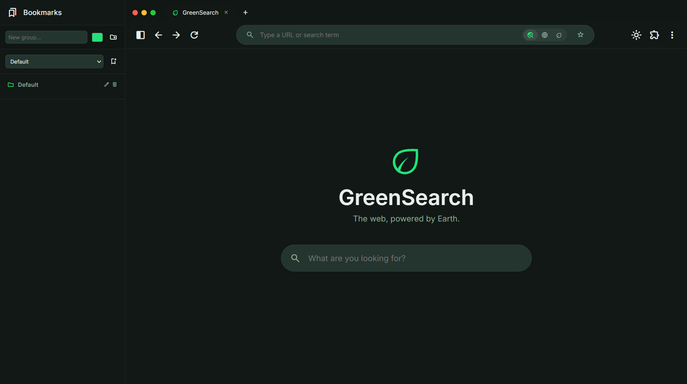
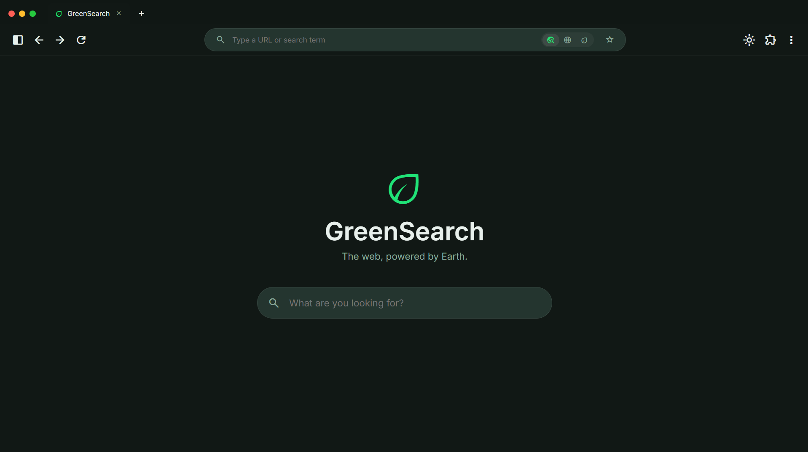
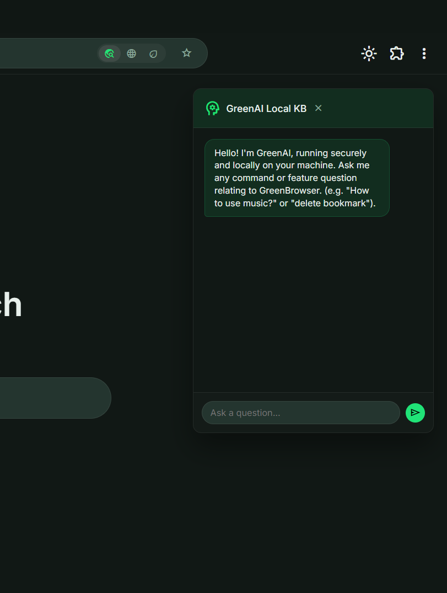

An eco-centric search interface operating locally. Experience true privacy and sustainability without leaving the grid.
Fluid design meets absolute efficiency.



Gain a complete understanding of your browsing environment. GreenBrowser operates securely, utilizing local JavaScript engines to answer scenarios entirely offline.
No external server communication required for base tasks.
Designed to maintain the lowest possible digital footprint.
[Interactive Element Space]